Townsmen - A Kingdom Rebuilt
Fall is a cosy and peaceful highscore hunting game in which the player portraits a forest witch that tries to collect the fruits that fall from the autumn trees while avoiding the heavy pumpkins.
The gameplay focuses on a relaxing experience and therefore introduces only a small challenge over time.
- Time: 2 months
- Team: 1
- Engine: Unity
- Platform: PC
- Other Tools: Aesprite, DaVinci Resolve Studio (Fairlight)
Contributions
Fall was a solo-dev project where I have worked on all aspects of the game completely alone, including:
Game Design
- creating the concept of the game
- keeping the scope small
Code
- implementing the gameplay
- implementing the UI
Art
- finding inspiration
- drawing all assets in the pixel-art style
Sound
- finding fitting sounds under the CC0 license
- implementing them into the game
Learnings
As I worked on every aspect of Fall myself, it helped me greatly to understand all the different skills that go into the creation of computer games and how much work each part of it is. But it also boosted my confidence that while it is a lot of work, you can still create a complete game within a few weeks, if you keep the game design proportionately simple.
The development process also taught me better time-estimation. Usually, things take longer than anticipated, and it is much more accurate to double the time you think you need for a task, and in the best case be done with it earlier than planned, than to take longer than estimated.
- importance of accurate time-estimation
- better understanding of the complexity of game development
What I would change
Looking back at Fall, I would make a few things different. Firstly, I would add a different sound effect for the acorns to indicate that the player just earned more points. Currently, the players would need to keep a constant eye on the high score, or read the small tutorial within the settings screen, to realise that the acorns are worth more points than the apples.
Secondly, I would add a few more features to make the gameplay more interesting. I believe that by adding a few more special items, the gameplay could be enhanced without taking away the relaxing part of the game. For example, I would add another item that takes away points from the player, or a rare item that gives the player a life back. Also, introducing different objects that stay for a few seconds longer on the ground and hinder the player's movement could be an interesting addition.
Implementing all these ideas would have increased the scope too much. However, I believe adding a singular item would have made for a more interesting gameplay experience.
Process
Game Design
With Fall I wanted to create a game that was completely finished, despite the relatively short amount of time I had to dedicate towards this project. I had the intention to keep the game design as simple as possible and to focus on implementing the necessary mechanics without raising the scope in the process.
As inspiration for Fall I thought of an old browser game I used to play as a child, and adapted the core mechanics of collecting falling objects to the setting of a magical forest. The idea of a forest-setting came to me as I thought of the season, autumn, or fall, and the duality I could play at with the name "Fall".
To make the game more interesting than simply collecting a single item falling from the skies, I introduced 3 different items to the game. Apples give the player one point, rare Acorns give the player 5 points and Pumpkins cost the player a life, if collected. I also wanted a high score list, or at least the highest achieved high score, to be displayed in the main menu.
Sound
The last part of the game were the sound effects and the background music. For these, I specifically looked at CC0 sounds and music, mostly on pixabay. Finding and implementing the background music was the easiest part, while the sound effects and especially the steps were more complicated to find, and I had to edit the steps specifically within DaVinci Studio Fairlight to make them sound good for Fall.
Implementation
After I had my fixed list of features, I started to implement them, starting with the character movement. This was quite easy to write, as it only required simple left-right movement, and I could quickly focus on the spawning of the different objects and their spawnrate. The life-counters and the high score were also easily implemented, and soon I had a working game with placeholder assets.
As soon as I finished the main gameplay loop, I switched my focus to the UI of the game and used placeholder assets to implement a main menu and a pause menu. The UI proved to be quite simple as well, as I only needed the basic start game, pause and sound-settings functionalities. The only slightly more challenging part was the high score list I thought of at the beginning. Realising that a complete high score list would require too much time, I switched to the fall-back idea of displaying only the highest achieved score on the device. Using simple PlayerPrefs, I stored this information and displayed it in the main menu.
Art
This was easily the part that took the most time. I worked in Aesprite to create the assets, and as it was my first time trying pixel-art, it took much longer than I thought to create the assets.
During the game design process, I had already made an asset list that I expanded on during the implementation of the game with things that I had forgotten. Therefore, I only had to work my way through the list and make all the different assets. To make the assets look good, I used many references to learn how to achieve specific shapes within the pixel-art style and how colour gradients work best.
Gallery

Background
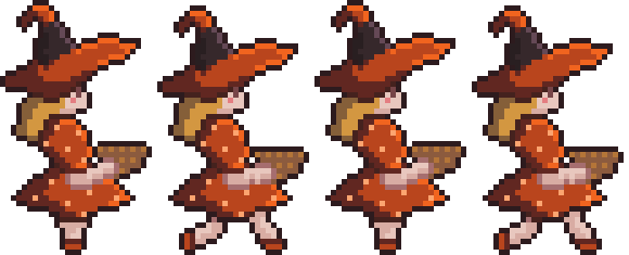

Walk Cycle
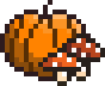

Logo
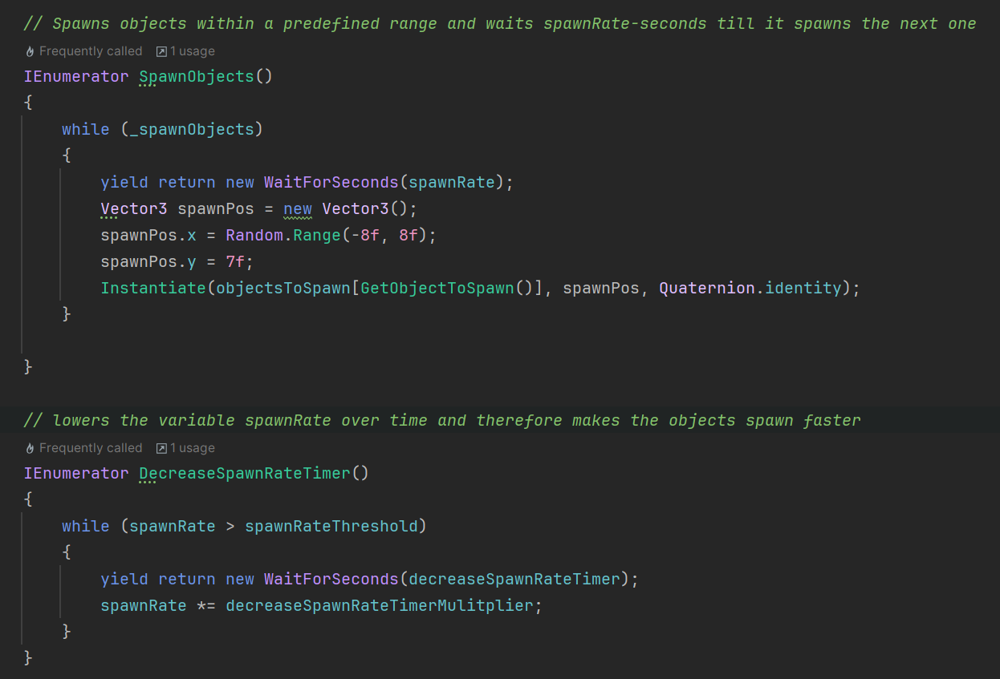

Spawnrate
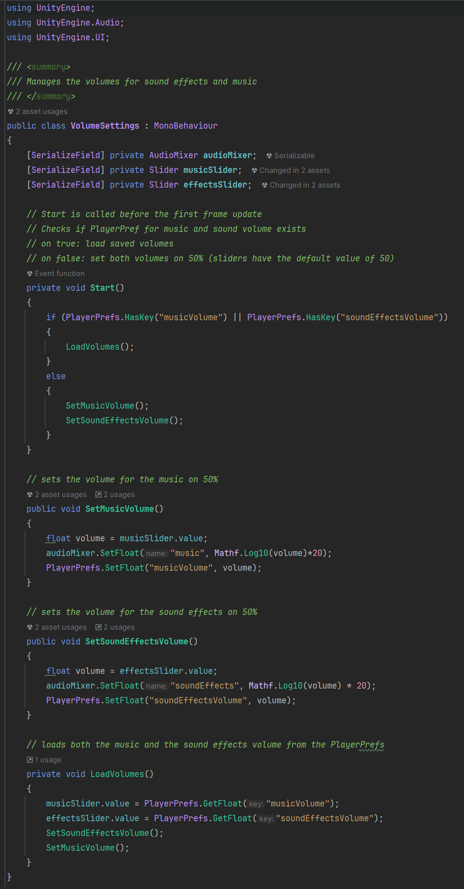

Volume Settings
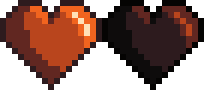

Hearts
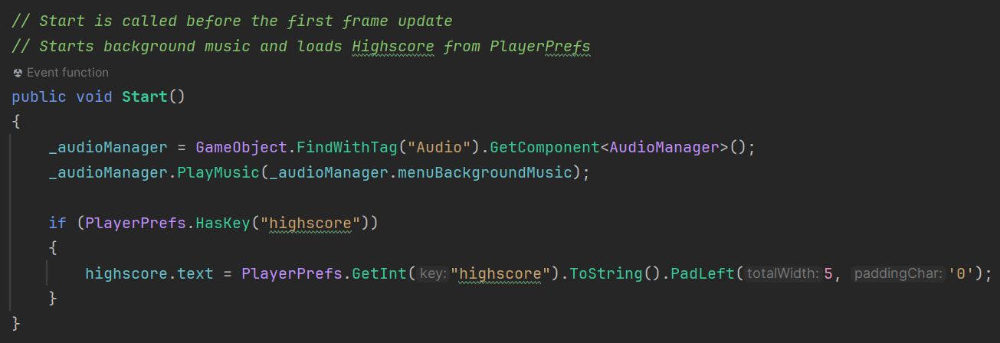

Loading Highscore
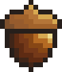

Acorn
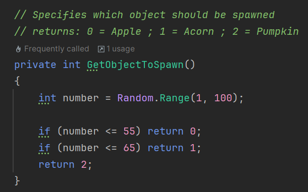

Spawning Objects
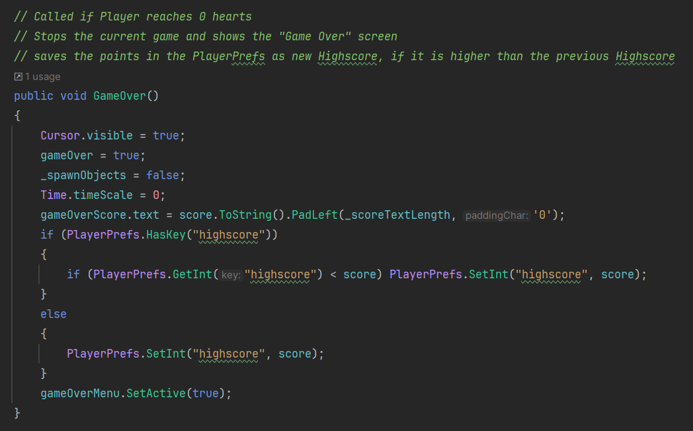

Saving Highscore
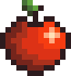

Apple
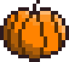